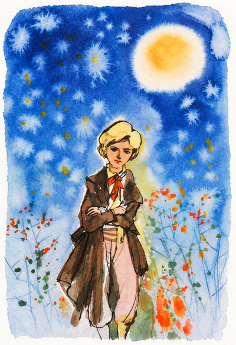
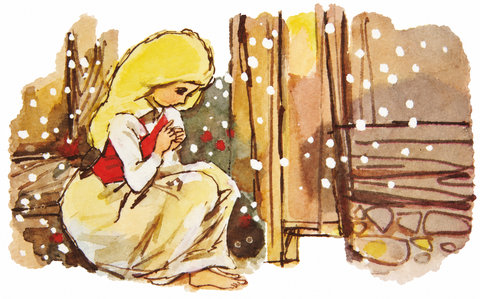

<오디세이> 영화가 개봉하고 나서 그리스 로마 신화 관련 책이 다시 인기를 끈다고 한다. 중고 시장에서는 특정 작화가의 책이 100만 원에 올라왔다는 소식이 화제가 됐다.

오래된 어린이 책을 100만 원에 판다고? 처음엔 신기하고 살 사람이 있을까 생각이 들었다. 그런데 생각해보니 나도 어렸을 때 가지고 있던 기억나는 책들이 있다. 동화책, 학습 백과, 월간 잡지 여러 가지가 있는데 그중 단연코 향수가 모락모락 피어나는 책 하나가 있으니 바로 <안데르센 동화 전집>이다.
동화 자체의 환상적인 이야기가 아련한데 많이들 알고 있는 <인어공주>를 비롯해 <성냥팔이 소녀>, <주석 병정>, <엄지공주>, <눈의 여왕>, <미운 오리 새끼> 등 아름다우면서 신기하고 때로는 슬픈 이야기도 많다. 난 <작은 클라우스와 큰 클라우스> 같은 블랙 유머도 좋아서 참 재미있게 읽었던 기억이 난다.
그런데 위 그리스 로마 신화도 그렇지만 사람들의 마음을 더 사로잡은 건 책 속의 삽화다.




동화적이고 몽환적인 분위기를 참 잘 살렸다. 어렸을 때는 그저 동화 나라의 그림이라고만 생각했는데 지금 와서 보면 그림의 섬세한 감성과 스타일이 새삼 눈에 들어온다. 작화가는 김광배님으로 그림책, 역사화 등 분야에서 활동한 분이다.
우리 집은 여러 번 이사하면서 책을 많이 버려 안데르센 동화는 오래전에 없어졌는데 지금 찾아보니 신진출판사에서 나온 책이며 100만 원에 매물이 올라온 경우가 있다. 왜 이렇게 높은 가격이 붙었을까? 그리스 로마 신화와 달리 이 책은 나에게 의미가 있고 선뜻 사지는 못하더라도 이해는 할 수 있었다.
성인이 돼서 구매력이 생긴 사람들이 어린 시절을 추억하며 그 향수를 되살리고 싶은 마음이 아닐까 싶다. 동화책 내용이야 어디서든 사서 볼 수 있지만 이 삽화로 나온 책은 더 이상 나오지 않는다. 귀중한 기억을 현실에 다시 살릴 수 있다는 건 매력적이지 않은가?
철학서인 <카오스의 아이들> “무엇이 실제인가” 절에 이런 내용이 있다.
디지털 방식으로 저장되고 전자 매체를 통해 확산되는 데이터가 등장함으로써 구식 인쇄 매체의 중요성이 더해졌다.
…
인쇄 매체는 단지 정보만 가지고 있는 것이 아니라 형체와 중량을 가진 손에 잡히는 대상들이고 작가와 주제에 물리적으로 연결되어 있다는 느낌을 준다.
그렇다. 책을 직접 가지면 작가와 좀더 가까워지는 느낌이다. 그 작가가 들려주는 이야기와 그림에서 나의 어린 시절과도 연결되는 느낌을 받는다.
컴퓨터 화면으로도 삽화를 보고 PDF로 책을 볼 수도 있다. 하지만 어린 시절 그대로의 책장을 넘기고 누렇게 변한 종이 사이 글을 읽으며 익숙한 그림을 다시 만나는 것은 분명 다른 경험일 것이다. 그 물건 자체가 기억의 일부이기 때문이다.
지금 우리 주변에 너무 흔해서 별생각 없이 놔둔 것들 중에도 훗날 내 일부로 기억되는 게 있을까?
어쩌면 내가 다시 만나고 싶은 것은 오래된 동화책을 펼쳐 보던 어린 시절의 나인지도 모르겠다.
댓글
댓글을 불러오는 중입니다.